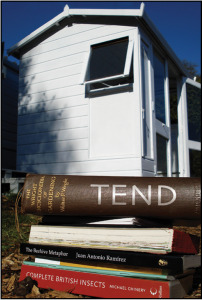
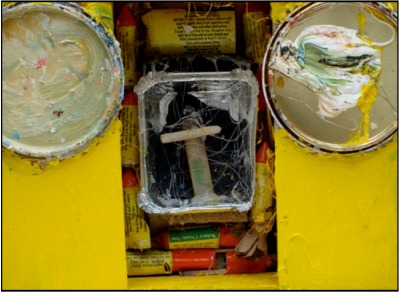

Trewidden Garden Open Studios and Garden Event
Event Name: Trewidden Garden Open Studios and Garden Event - FREE ENTRY TO THE GARDEN
Event Date & Time: Saturday 12th & Sunday 13th September 2009 10.30am to 5.30pm
Event Location -
Trewidden Garden, Buryas Bridge, Newlyn, TR20 8TT
Event Website - www.cornwalartstudios.co.uk/artists.htm
An exciting opportunity to see 15 artists open their studios housed in the Victorian stable block in the beautiful grounds of Trewidden Garden near Penzance on 12th and 13th September 2009 to mark the official opening of the new Trewidden Studios.
There will be something for everyone with many works of art for sale, free entry all weekend to the famous garden at Trewidden, an official book launch and installation in the TEND ‘shed’ and cream teas and light refreshments available throughout the weekend.
The fifteen artists’ studios and Trewidden Garden will be open with no admission charge for Saturday and Sunday 12th and 13th September (admissions from 10.30am till 5.30pm Sat and Sun).
There will be work by some of Cornwal's most well known and strongest emerging artists with the opportunity to nose around the studios of Paul Wadsworth NSA, Maggie O’Brien, Juliet Paull, Sam Bassett, Mark Spray, Peter Wray, Judy Collins, Jane Ansell and David Paton (TEND project), Henry Garfit, Jules Clark, Gillian Cooper NSA, Mark Nicholls, Stephen Prince and Chris Wormald.
Large and small works of art will be on sale direct from the artists’ studios including paintings, sculptures, editioned prints, photographs and the launch of the new TEND book.

Paul Wadsworth
History
The project has some interesting history in that the Bolitho family, who own the Trewidden Estate in which the studios are situated, sponsored many of the famous Newlyn School artists over many years before and after 1900, including perhaps the best known of the group - Stanhope Forbes - who painted many Bolitho family portraits. A number of other famous Newlyn artists including Alfred Munnings, Frank Bramley and Althea Garstin also painted portraits of the Bolitho family.
Therefore the recent creation of the fifteen new artists’ studios from the conversion of the Victorian stables at Trewidden Garden near Penzance marks the present day continuation of a 125 year relationship between Cornish landowners the Bolitho family and the artistic community around Newlyn.
Further evidence of the Bolitho’s involvement in the arts around Newlyn came in the form of local Member of Parliament Thomas Bedford Bolitho’s response to the economic downturn of 1890 – caused by bad weather and low fishing stock. T. B. Bolitho set up the Newlyn Industrial Class copper works to train underemployed fisherman to produce items in copper; the start of the famous Newlyn copper industry.